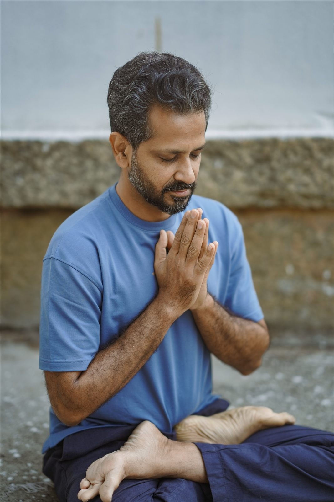

Gokulam, Mysore
Ashtanga Vinyasa Mysore Style
Learn the Ashtanga sequence gradually, with individual instruction and adaptations for your strength and mobility.
Explore Ashtanga

Ritambhara Yoga Shala · Mysore & online
Pranayama · Yoga Nidra · Ashtanga
Explore pranayama, Yoga Nidra and Ashtanga in Gokulam, Mysore, with Ankur Bhati. Clear explanations, calm guidance and practice that develops at your pace.
Beginners welcome. Individual guidance.

Meet Ankur Bhati
Ankur Bhati, founder of Ritambhara Yoga Shala, brings 14 years of yoga teaching experience. He teaches Ashtanga, Hatha Yoga, pranayama and Yoga Nidra in Gokulam, Mysore, and online.
He has trained with Yogacharya Bharath Shetty and Yogacharya Vijay Kumar in Mysore, and in yoga therapy at SVYASA. Clear instruction, close observation and thoughtful adaptations help beginners and experienced practitioners develop at their own pace.
Nine years in Human Resources inform his understanding of working life and stress. His teaching brings traditional practice into everyday life, with instruction that responds to each student.
Practitioners describe patient explanations, personal attention and a calm presence. Reviews of Ankur’s Yoga Nidra sessions also highlight his soothing voice and the experience of guided rest. Read practitioner reviews on Google.
Explore the classes01 / Classes
Explore a one-month pranayama course, individual Ashtanga instruction in Mysore, or guided online yoga. Ask about Yoga Nidra sessions for guided rest and awareness.
Gokulam, Mysore
Learn the Ashtanga sequence gradually, with individual instruction and adaptations for your strength and mobility.
Explore AshtangaMysore & online
A one-month pranayama course rooted in Hatha Yoga, with techniques introduced progressively. Join in Mysore or live online.
Explore Prana Urja
Live online
Morning yoga: Monday, Wednesday & Friday, 5:15–6:00 AM IST. A beginner-friendly, 45-minute practice before your day begins. Evening yoga and Prana Urja are also available.
Explore online classes
Breath and stillness · Gokulam, Mysore
Prana Urja introduces traditional pranayama progressively, with time to understand the techniques and notice your own experience. Breath as a direct path back to self.
Explore the Prana Urja pranayama courseA guided practice of rest and awareness, usually experienced lying down. Ankur's steady verbal guidance offers space to settle, listen and observe without needing to achieve a posture.
Explore Yoga Nidra and enquire about sessionsBeyond group classes
Practitioner experiences
On pranayama teaching
“Ankur naturally brings you into his grounded energy, guiding you with a beautiful balance of discipline and gentleness.”
On support in asana and pranayama
“He is very grounded, open-minded and constantly looking for the best way to support his students.”
Before your first class
Yes. Mysore-style Ashtanga is taught gradually, and the morning online yoga class is beginner-friendly. Prana Urja introduces techniques progressively. You do not need to know a sequence before joining.
Choose Mysore-style Ashtanga for individual instruction in asana at the shala, Prana Urja for a month of guided pranayama, or online yoga for a live Hatha practice from home. If you are unsure, ask Ankur before enrolling.
Send a class enquiry with your contact details and experience. Ankur will reply with availability, fees and joining information. Your place is confirmed after enrolment is arranged together.
Ask about a class02 / Contact
Ask about availability, fees or which class to choose. Ankur will reply personally with the details you need to begin.
5, 7th Main Road, Gokulam 3rd Stage, Gokulam, Mysuru, Karnataka 570002
+91 98280 67272 ankurbhati@gmail.com Ritambhara Yoga Shala, Mysore